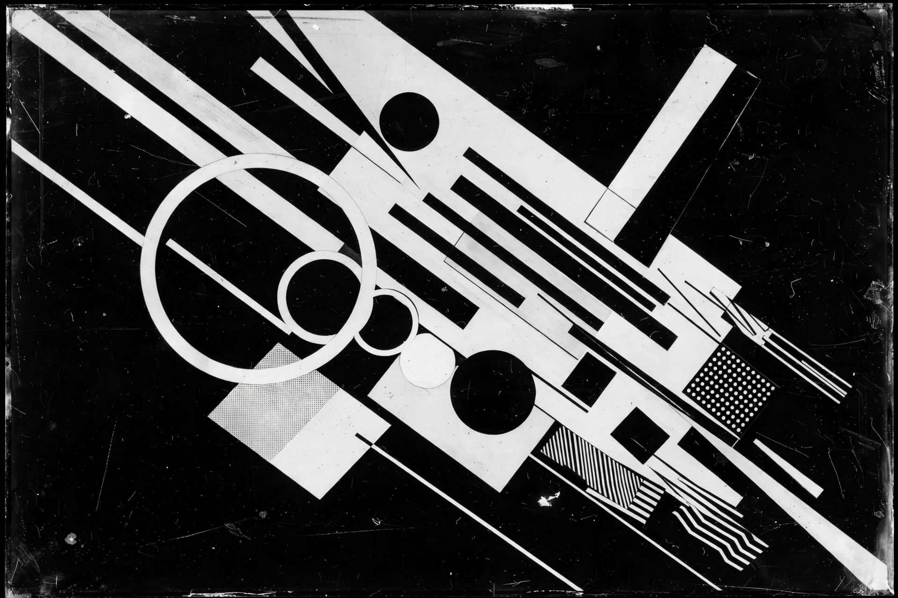

Abstract film

| Years active | 1920s–present |
|---|---|
| Key figures | Hans Richter, Viking Eggeling, Oskar Fischinger, Len Lye |
Abstract film is a subgenre of experimental film and a form of abstract art in motion, in which the film does not present a narrative or representational imagery but instead works with colour, shape, rhythm and movement — often described as "visual music". Abstract films emerged in the 1920s from avant-garde painting movements such as Cubism, Futurism and Dada.
History
Early pioneers included Walter Ruttmann (Lichtspiel: Opus I, 1921), Hans Richter (Rhythmus 21, 1921) and Viking Eggeling (Symphonie diagonale, 1924), who sought a universal language of animated geometric form. Oskar Fischinger refined the form with hand-drawn and optical techniques and influenced Disney's Fantasia. Len Lye pioneered painting and scratching directly on film stock, while later artists such as Stan Brakhage, Norman McLaren and John Whitney (with early computer graphics) expanded its techniques.
Techniques
Abstract filmmakers have used hand-painted and scratched film, stop-motion of objects and cut-outs, optical printing, oscilloscopes and computer animation. Many worked in close synchronisation with music; others explored pure visual rhythm independent of sound.